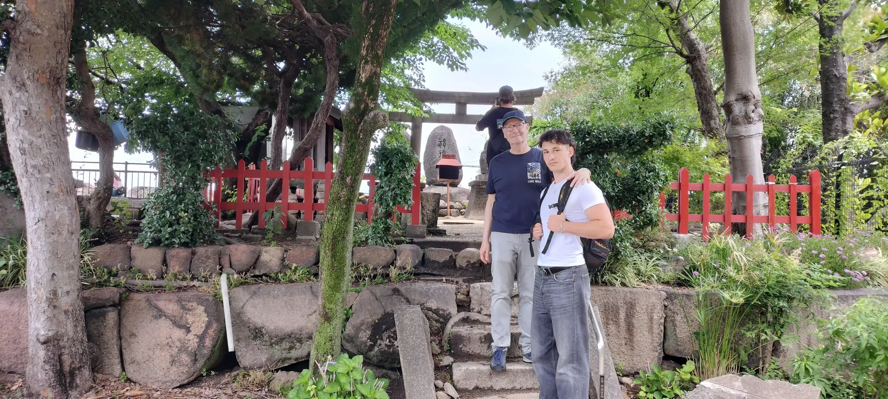

The Stone Walls — A Story in Stone


The stone walls of Osaka Castle are not just defensive structures — they are the physical evidence of a political act. When the Tokugawa rebuilt the castle starting in 1620, they covered Toyotomi Hideyoshi's original stone walls under several metres of fill, building entirely new walls on top.
Toyotomi Walls vs. Tokugawa Walls
Archaeological investigations show that the Toyotomi-period masonry differs markedly from the later Tokugawa walls. Toyotomi-period corner stones are elongated and irregular, while the Tokugawa walls employ much more regular cut stone. The visible stone walls belong to the Tokugawa-period castle; Toyotomi-period walls survive beneath the later construction.
The Octopus Stone
The famous Octopus Stone (Tako-ishi) belongs to the later Tokugawa castle, not to Hideyoshi's original walls. Its enormous size illustrates the extraordinary scale of the Tokugawa reconstruction, when daimyō from across Japan were mobilised through the system of tenka-bushin to rebuild Osaka Castle.
The Toyotomi Stone Wall Museum
The Toyotomi Stone Wall Museum, opened in 2025, allows visitors to see a section of the Toyotomi-period stone wall that archaeologists first identified in 1984 and subsequently excavated. For centuries, the surviving remains of Hideyoshi's castle lay beneath the later Tokugawa construction. The walls of Osaka Castle are not just stones — they are the physical evidence of who gets to write history.